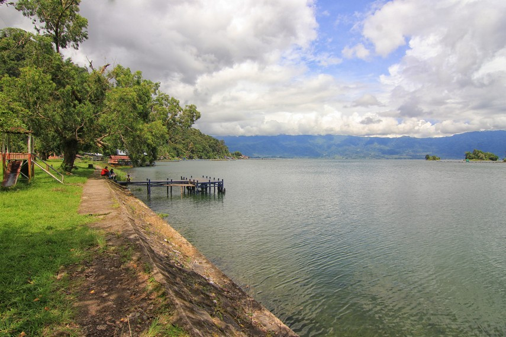

Keindahan alam Sumatera Barat terangkum lengkap di tanah Minangkabau. Dari pantai-pantai yang menawan, bentangan ngarai serta lembah yang mengagumkan, hiasan kontur alam berupa gunung serta perbukitan dan tak ketinggalan, keindahan danau-danau yang memukau. Tidak diragukan lagi, salah satu danau di Sumatera Barat yang menyimpan panorama alam yang memikat adalah Danau Maninjau.
Danau Maninjau merupakan sebuah danau vulkanik yang berada tepat di jantung Kabupaten Agam, Sumatera Barat. Terletak di ketinggian kurang lebih 460 meter diatas permukaan laut, danau ini membentang seluas 100 km persegi dengan kedalaman rata-rata 105 meter. Dengan luasnya tersebut, Maninjau menjadi danau terluas kesebelas di Indonesia.

Menurut sejarahnya, danau ini terbentuk akibat erupsi vulkanik dari Gunung Sitinjau yang terjadi kurang lebih 52.000 tahun yang lalu. Kaldera yang terbentuk sedemikian luas kemudian berkembang menjadi sebuah danau. Hal ini sama seperti yang terjadi pada Danau Toba di Sumatera Utara dan Danau Batur di Bali.
Di luar kacamata keilmuan, terdapat sebuah legenda yang berkembang secara turun temurun di kalangan masyarakat setempat mengenai asal muasal dari danau ini. Legenda ini dikenal orang sebagai ‘Bujang Sembilan’, yang menceritakan kisah 10 bersaudara kakak beradik yang terdiri dari 9 orang bujang dan seorang gadis.
Alkisah sang gadis menjalin kasih dengan pemuda bernama Sigiran, tetapi kisah cinta berujung dengan munculnya fitnah dari kesembilan bujang. Para bujang ini menuduh hubungan yang terjadi antara keduanya telah melampaui batas norma masyarakat.
Dengan tuduhan yang dilontarkan oleh kesembilan saudaranya, sang gadis beserta kekasihnya kemudian bersumpah. Keduanya akan melompat ke kawah Gunung Tinjau (Sitinjau) untuk membuktikan kesucian diri mereka.
Sebelum melompat, mereka berkata dengan lantang, jika mereka bersalah maka gunung tersebut tidak akan meletus, tetapi jika mereka berdua tidak bersalah maka gunung tersebut akan meletus. Kisah ini pun berakhir dengan meletusnya Gunung Sitinjau sehingga membuktikan keduanya tidak bersalah.
Daya tarik Danau Maninjau terletak pada keindahan panorama alamnya yang bisa dilihat dari kejauhan. Karenanya, tidak lengkap jika membahas Danau Maninjau tanpa membahas spot ideal untuk menikmatinya. Terutama bagi para pecinta fotografi pastinya tidak ingin melewatkan keindahan tersebut tanpa mengabadikannya.
Spot terbaik untuk mengamati Danau Maninjau adalah dari tengah kawasan yang disebut kelok 44, yaitu dari sekitar kelok 23 hingga kelok 30. Di sekitar area inilah pemandangan bentangan danau yang dihiasi hamparan sawah nan subur terlihat sangat indah dan dapat memberikan ketenangan hati bagi mereka yang menyaksikannya.